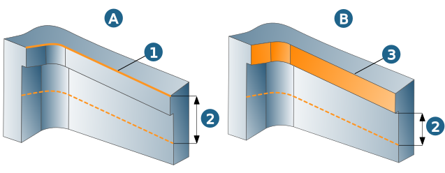
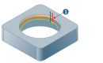
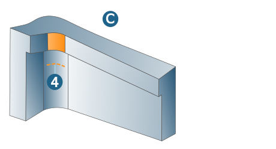
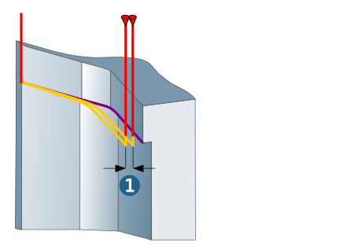

Contours
Selection mode, Contour selection / Surface selection, Depth mode / Extension mode
In the Curve mode (A), define the machining area in the axial direction (2) by selecting a curve (1) under → and defining a value under → . In order to define the machining depth and profile, you can also select a second curve under → .
In the Surface mode (B), define the machining area in the axial direction (2) by selecting a surface (3) under → and defining a value under → . In order to define the machining depth and profile, you can also select a second curve under → .
|  |
Start point
Use start point: In the Surface selection mode, specify a start point (1) at which machining should begin. The point must be on the selected surface. Only available for closed surface formations.
|  |
Reference job / Limit
In the Reference job mode (C), select a reference job that to be applied, for instance, if the radius of the tool used exceeds the smallest radius of the machined surface. In order to further limit the machining area in Z direction, select a curve (4) under → .
|  |
Contour selection
Freely select the start point (1) for each contour.
 |
Set an end point (2) if the contour is to be machined only partially or if there should be an overlap.
 |
Overlap: An overlap is only permissible for closed contours. After milling the contour, the tool moves past the user-defined start point (1) to the set end point (2).
 |
Offset (1): The toolpath is moved in XY direction by the defined value.
|  |